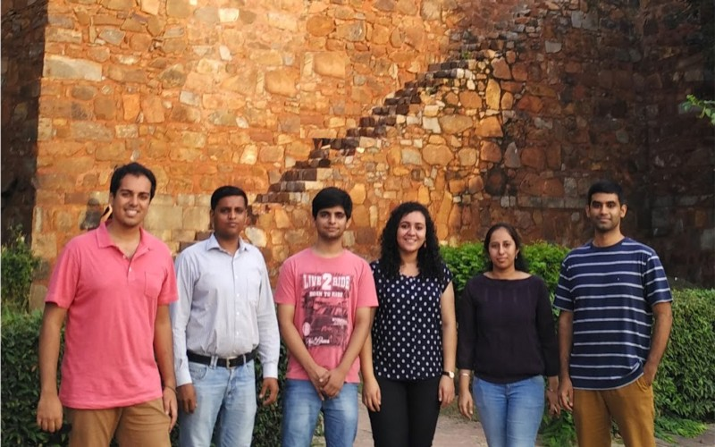

I took over CEO responsibilities in February 2015 as my co-founder temporarily took on a part-time job due to financial constraints. I had been managing product and technology while he was responsible for the sales and operations side of the business. In startup jargon, I was inside the building, while he was outside the building. This was about to change.
Different roles in a tech startup
I was now required to wear not just technology, design and business hats, but sales, marketing and operations ones as well. Managing 8 people doing different tasks was a challenge, as I constantly had to switch contexts - one minute I'm debating technical solutions to a particular problem, the next moment I'm planning sales strategies for the week. I found my productivity dropped as I was not able to give my 100% anywhere.
"One thing at a time and that done well is the best of all roads that any can tell"
- My 97 year old grandmother
I now follow a simple strategy of being self-disciplined to complete whatever task I am doing before switching to something else. I block off mornings and evenings (typically an hour or so) to send out emails. I plan my week to have meeting and non-meeting days. I try to jam pack my meeting days to maximize efficiency. These meetings could be with school leads, mentors, advisors or potential partners. On my non-meeting days, I block off time to review code, team updates and work on operational things for the business. Tools like Trello and Teamweek have really helped improve my efficiency in monitoring employee outcomes to ensure we are on track with our goals.
I have learnt how to manage my time efficiently and be focused on the task at hand.